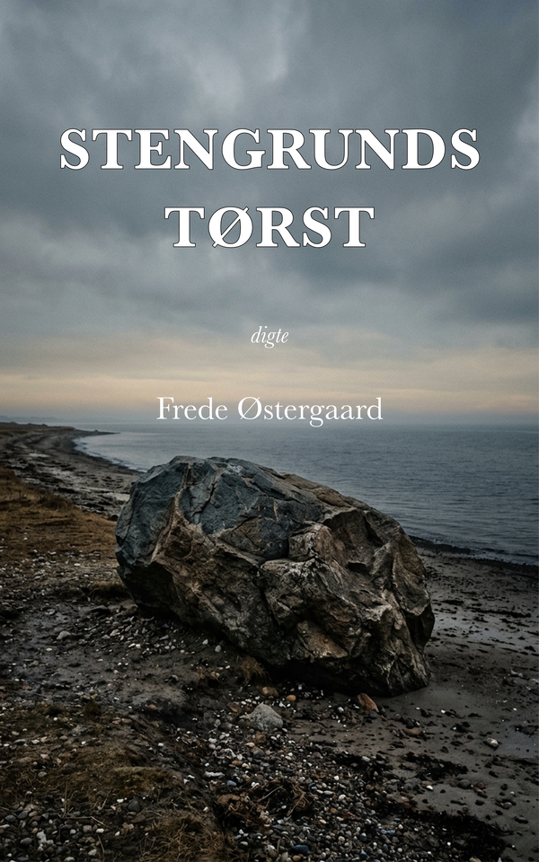

Stengrunds tørst
Digte
Kolofon
Stengrunds tørst
© Frede Østergaard
Digtene er skrevet: 1980–1983
Digital Web-udgave udgivet i 2026
Forlaget Den Gamle Poet
Digitale udgaver og kildefiler:
github.com/forlaget-den-gamle-poet/digte
Alle rettigheder forbeholdes
Abepedersen
Da han solgte kroen,
solgte han
aben med.
Abepedersen
der sad i sit bur
bagest i haven
og var søndagsturens
attraktion.
Kromandens drikkende
abe,
der rystende på
sine gamle
hænder
bad de leende
turister
om en lille en
til halsen.
Bagefter kvitterede
den for skænken
med alle drankerens
genkendelige
reaktioner,
der her i aben
virkede ufarligt
morsomme.
Den nye ejer
havde ondt af aben
og tænkte egentlig på
at afvænne den,
men indså hurtigt
at Abepedersen
var mere end
attraktion.
Abepedersen
var skæbne
og mere end det.
Noget uafvænneligt
der gik sine egne
veje,
og derfor fortsatte
aben sit liv
i buret for enden af
haven.
Abepedersen fik en dag
besøg
af sin gamle ejer.
Gensynsglæden var stor
på begge sider.
Dens reaktion så
formidabel
at den gjorde indtryk
på de to besiddere af
Pedersens
kærlighed
og hurtigt dukkede
det uundgåelige
væddemål op,
der skulle betyde
katastrofe for
en indespærret
hengivenhed.
Prøven blev arrangeret
på den grusdækkede vej
udenfor.
Én ejer
på hver side
og Abepedersens oldingekrop
fastholdt
i midten
til signalet blev givet:
Slip Pedersen løs.
Lad ham vælge side.
De sagde bagefter
den skreg så højt,
at de kunne høre
det en kilometer borte,
men det var få der
så abens krop
forsøge at vælge side.
Han smed sig ned,
Abepedersen,
og gav sig til at skrige.
Var sanseløs væk
i nådig krampe, der
efter en tid
gjorde kroppen
stille.
Hvad fanden gik der af ham?
sagde de bagefter.
Hvad skulle det til for?
Men alle vidste,
uden at kunne give det udtryk
i ord,
at de havde oplevet noget,
de aldrig skulle glemme.
Kærlighedens sliden
et hjerte i stykker.
Abepedersen døde ikke alene,
men han døde
forgæves.
Han blev ofret
for en nysgerrighed, der
ikke stod mål med hans
drankersjæls tørsten
efter noget, der var
større end ham selv.
En uslukket tørst
efter noget, han
aldrig rigtig fik,
men bare anede
i sit bur
for enden af
haven
Aften
Det er slut
for i dag.
Mørket lister ud
af jorden
og siver
opad
hvor naturens
farver
gløder
som essensen
af dagens
stræb.
Og langsomt
tændes
stjernerne
der synger
en evighed
ud over
dækkede
verdener
ingen kender.
Alvor
Livets alvor
maler landskabet
vemodigt,
mens det strømmer
forbi min undren.
Livets alvor er vist
aldrig helt alvorlig,
når det er mig, det
rammer.
Var det en anden, det
gik ud over,
havde det sikkert været
alvorligt,
men når det er mig,
der er ramt, er jeg lidt i
tvivl.
Det rigtige liv
kommer nok ikke
til sådan en som mig,
og ulykken er til
at bære,
så længe de andre
ikke bemærker
noget.
Beredelse
Det vælter op af jorden,
jeg brækker løs på
med min spade,
så det værker
i kroppen længe
efter.
Sten og ler,
smådyr og
underlige formationer,
der bare får lov til
at vende rundt en gang
uden at blive kigget nærmere på.
Bare ned med dem igen.
De skal blive til
grøntsager
næste år,
når jeg engang
er blevet færdig
med alt dette her,
der altså bare er
at berede jorden.
Næste forår
skal der drysses
lidt krymmel ned
og så vil det alt sammen
ganske af sig
selv
blive formet om
til gulerødder
og radiser,
til porrer og rødbeder
med hver deres duft og smag.
Gudved om der kan vokse
sådan en redelighed frem
af mig,
hvis jeg giver mig til at grave
i mig selv og
lader
alt det formløse
komme frem i lyset
og vende en tur
under forstandens,
følelsens og fantasiens
sollys.
Kommer der også
et forår for mig,
så Gud give
at jeg må vide,
at berede jorden
nu.
Betroelse
Det bliver
pludselig
for meget for dig.
Der går ganske enkelt panik
i dig,
da jeg tager dig med
indenfor,
hvor vi med et står
overfor
virkeligheden.
Vi har længe
hygget os
udenfor
i ærlig tosomhed,
men da vi åbner døren
til virkelighedens
ramme lugt,
vil du ikke med.
Vil ikke vide mere.
Så lukker vi døren
igen.
Vender tilbage
til den gamle
position.
Men hyggen er borte.
Og skamfulde falder
det os svært
at se hinanden
i øjnene.
Vi taler sammen.
Dødvande
Hver
eneste
dag
er
som
dagen
før
skønt
jeg
hver
dag
håber
at
dagen
i morgen
er
ny.
Forberedt
på
det
uventede
venter
jeg
utålmodigt
den
ny
dags
grå
bag
nattens
åbnede
porte.
Drøm
Vi sender
vore inderste
tanker
anonymt
til hinanden
fordi vi ikke
vover
at adressere
den kluntede
drøm
der ligger nedenunder
de lag
vi tør vedkende os
over for os selv.
Dugdråbe
Sekundet
er som
en dugdråbe.
Overvældende
afrundet.
Underfuldt
fuldendt.
Formspændt
i sig selv.
Med mulighed
for lysets
tindren,
med mulighed
for fald.
Sekundet er
som en dugdråbe,
du drikker
af et blad.
Ejer
Hellere
end at lege
turist
i mit eget land
vil jeg tage det i
besiddelse
ved en bevidst
flyttedagsbeslutning.
Fylde hele
pladsen
ud
og erklære
området
for
uindskrænket
mit
uden at
skulle betale
told
ved grænsen.
En stjerne
En stjerne er tilbage
mellem de
flossede skyer.
Slukkes også den
vil mørket brøle
kvælende
og suset fra
poplen
i min have
vil flyde
usynligt
mod husets
nøgne
mure.
Ensom
Det ensomme menneskes
drivværk
er længslen
der langt inde
bag kødet
nervøst fingererer
med håbet
om andre tider.
Selv på dage
hvor skuffelsen
tilsyneladende
har slukket
livsviljen
trækker længslens
fjeder
livet pulserende
gennem årerne.
Anvendt af Cafeteatret 2005
i forbindelse med
skuespillet Under bæltestedet
af Richard Dresser
Ensomhed
Musikken
spiller i baggrunden
dybt på bunden
af tankernes hav.
Den klager skæbnesvangert
bruser
skriger
vildt
i nød
inød, i nød, i nød.
Så tier den
der høres kun
en sagte hulken
fra fagotten.
Nu tier den
og ensomheden kommer snigende.
Trøstesløsheden
Ørkensand
en bleggrå
skyfri himmel
En lige horisont.
Flugt
Langt herfra
ligger byen
med mange
menneskers drømme.
Byen har
så mange
universer
at mit
alene
mellem
bakkerne
blafrer
uvirkeligt
efter ekko.
Deres drømme
og mine drømme.
Mit univers
og deres.
Jeg sulter
efter jer
drømme.
Jeg tørster
efter jer
umistelige universer
mellem mine
bakker.
Jeg vil drukne
i folkehavet.
Opsluges
af massernes intethed
for ikke at føle
min egen
smerte.
Forbillede
Du er
et billede.
Ikke af dig
selv,
men af en,
der passer
til dine
tanker.
Dit billede
lyser over
dig og
dækker dig
til med
en lerøjet
livløs
maske.
Maskekampen
begynder,
når du opdager den,
og finder den
kæmpende
mod dit jegs
inderste
interesser.
Den kæmper
mere voldsomt
end du,
der er den,
der skal
gøre bevægelse.
Stivnet
klæber den
til dig
og dræber
alle
udtryk.
Frelser
Så kom da
siger du venligt.
Så kom da
og lad mig hjælpe dig.
Jeg har ikke råd
til at sige nej
og sidder med et
i saksen.
Du viser mig den
sandhed,
der har lokket mig
herhen,
i alle dens
rige facetter.
Jeg kan ikke lide det,
men har ikke råd
til at vise det.
Jeg må tage imod
din skamløse
åbnen mig op
under sandhedens
knivskarpe spotlight.
Sådan, siger du.
Sådan.
Nu kan du være fri.
Ja, siger jeg.
Ja.
Jeg må tænke over det,
og ved med hele mit
væsen:
Jeg må lukke mig.
Lukke mig.
Lade som om
det aldrig har været.
Jeg må for altid
undgå dig.
Hade dig.
Fornægte dig.
Det koster dyrt
at være sin næstes næste.
Frygt ikke
At frygte
livet
er
at frygte
sig selv
fra øjeblik
til øjeblik.
Intet
er
at ræddes for
hvor du
er hel tilstede
i din
inderste vilje
til
sandhed.
Fuglene
Fuglene dukker frem
af buskenes sikkerhed
nu jeg bliver stille
og sidder med
spaden over knæene og
ryggen op mod muren.
Her er så stille
langt ind i mig,
hvor fuglene i mig
forsigtigt
stikker hovederne frem
og ser sig om.
De vover sig længere frem,
mine fugle og buskenes.
Sender mistænksomme
øjekast i alle retninger.
Sidder lidt
inden de nærmer sig
beddet, jeg lige har gravet.
Drejer jeg hovedet
er de væk igen
på blafrende,
hurtige vinger.
De evigt
flygtende
fugle.
Grovæder
Du spiser
spørgsmålstegn.
Du spiser
alt for mange
i stedet for
at sætte dem.
Det irriterer mig,
for det giver mig alt
for lille
mulighed for
at komme tæt
på dig.
Du lukker dig
med spiste spørgsmålstegn.
Bøvser af mæthed.
Bobler over med forklaringer,
der afløser hinanden
i en uigennemtrængelig
rustning,
der værner dit
ømme indre.
Helvede
De siger
til dig,
at det er de andre,
der er
Helvede,
men lyt ikke
til dem.
Helvede
er
ikke
de andre,
men dit eget indre,
omgærdet
af dine egne
fordomme
vogtet af
dig selv.
Du er din
egen
Satan,
når du vender
al din naturlige
livsvilje
indad til
selvkontrol
på et falsk
grundlag.
Det er ikke
de andre,
der sidder inde
med nøglen
til dig.
Du har den
og bestemmer
selv
hvornår,
hvordan og hvorfor
du vil have
indgangen
åbnet
til enhver
muligheds
helvede eller
paradis.
De andre er
medrejsende
og side om side
vogter I private
verdener,
der burde gøres
frugtbart
tilgængelige,
ikke til fælles
eje,
for intet er
i grunden
fælles
i denne verden,
men tilgængelige
for det liv,
der tænker os
alle.
Hulen
Dagene er lange
og grå
med gule og brune
skygger
der haster
hurtigere og hurtigere
forbi
altid forbi
min hule.
Tøver en
uden for
ræddes jeg
for et møde
og lader
som om
jeg sover.
Hvad venter vi på?
Vi venter
på
forløsning.
Venter
på
resultater
af vores
væren.
Facit
rummes i
nuet,
der kan
udstrækkes
uendeligt
til begge
sider
af sig selv
og omspænde
evigheden.
Længst
stivnede
sorger,
kommende
kriser
og kras
hverdag
har intet forsvar
mod nuets
mulighed,
der evigt
ligger
åben
for os.
Hvorfor
Hvorfor dør vi så tit
af at leve med andre?
Mennesker omkring en
får pludselig automatkarakter
og taler med robotters stemmer.
Deres eget jeg
er som kørt ind
på et spor
der går regelret ligeud
og ender
et sted
bag horisonten.
Hvorfor Robin?
Jeg følte mig
uvirkelig,
sagde han.
Det vil sige,
det var ikke
de ord,
han brugte,
for han kendte
dem ikke.
Han sagde:
Det var åndssvagt.
Men ruden var
virkelig
og den der
smadrer andres
virkelighed
kan ikke selv
være
uvirkelig.
I splintret glas
fødtes hans
virkelighed
for lynhurtigt
at dø under vores
spørgsmål.
Hvorfor Robin?
Ilden
Nu dør ilden hen
for anden gang
i nat
i pejsens mørke
hule.
Den grå stilhed
lister sig ind
på mig og
gør mig alene.
Får mig til
at huske
smertelige oplevelser
jeg troede glemt
og besejret.
Rystende lægger jeg
et stykke træ
på de ulmende gløder.
Indsigt
Meningen
med min
tilværelse
er måske
netop der
hvor jeg ikke
har søgt:
I lydig troskab mod
det der længe har
været mit.
Isblomster
Tiden har slidt os.
Elimineret
det center
der skulle styre
sammenhæng.
Selv når vi
danser
er vi
alene.
Onanerer
bag tilværelsens
ruder
som uvægerligt
fryser til
af grænse
for et
enkelt
menneskes varme.
Jet
Lyden
af en enlig
jager
buldrer gennem
aftenmørket
og ripper op
i dagens slumrende
ængstelse
for en
fremtid
der ikke vil
konfronteres
med mit indres ønsker.
Lyden anslår
et tomrum i mig
der vibrerer
af spørgende
tomhed.
Jeg er
en skal
om glødende
øde
der smerter
efter at
fyldes
med tro
på noget
der er større
end mine
egne drømme.
Kadavere
De andres
billeder
virker
skræmmende
i deres retoucherede
perfekthed.
Afsluttethed.
Enhed.
Ens egen
famlende
mangfoldighed
bøjer ydmygt
hovedet
når et overmalet
kadaver
stolt
skrider
forbi.
Det er ærgerligt
hvis rige
muligheder
forspildes
af benovelse.
Korsvejen
Og så drog de ud
i den store verden
og skiltes ved
korsvejen
under den gamle egs
krone.
Som tegnbærer
stak de deres
eneste eje,
den blanke dolk,
ind i træets
hårdt prøvede
stamme.
Hvor mange ynglingedolke
bærer du spor af?
Hvor mange rustne
blade har du ædt
med din krop?
de unge fyres
knyttede rygge
har trodset dit
sfinksvæsens
seen.
Hvor mange vendte tilbage
for at søge sin
tabte broder?
Hvor mange vendte tilbage
til stormende
manddomsmøde?
Hvor mange
blev borte
bag bakken?
De drog ud.
Hvor drager du hen,
du gamle
væsen,
der lever
af fortidens
eventyrkraft?
Spyt ud.
Spyt ud med din viden,
du har suget til dig
med talløse sanser.
Del ud af din viden
til dem, der
skilles
for aldrig at
mødes hos dig igen.
Råb et opmuntrende
ord til dem, der skal ses
igen.
I det mindste
et håbefuldt ord
til dem,
der trodser angsten.
Kan din viden
aldrig vækkes
af sin århundredgamle
søvn?
Er det derfor, du tier,
eller råber du sandhed
med flænset stemme,
vi ikke kan høre
i nutidssøvn?
Længsel
Vi længes efter
at række hinanden
hånden
og trænger
vedgud
til det
men selvom
vore hænder
når hinanden
er det som om
længslen
stadig piller
ved
et eller andet.
Lad blomstre markens blomster
Giv livet en chance i dag
fredag.
Giv livet en chance
nu.
Ikke om lidt.
Ikke i morgen.
Om en uge.
En måned.
Et år.
Giv livet en chance
i dag
fredag.
Nufredag.
Nu.
Kun øjeblikket
har magt over
fortiden.
Kun øjeblikket
er øjeblikkets
mulighed.
Kun øjeblikket
bestemmer
fremtiden.
Vibrerer af
liv, der kan
dirigeres
i ringe indad
eller udad
mod hvert
sekunds egen
evighed.
Du bestemmer
ingenting,
men er under
øjeblikkets
kærtegn.
Lettelse
Nu regner det
bare
og stormen er
standset.
Vidunderligt stille
derude
hvor jorden
har åbnet
sig tyst
for regnen
og tusmørket
hvisker
godnat.
Markbrand
Markerne brænder
i mørket
Knitrende røde
valmuer
vugger
vildt i mørket
Markerne tømmes
for mørke
Tømmes for
tomme tanker,
der har udspillet
deres tid
Markerne oser
mod himlen
Oser det udbrændte
selv
op i de
tindrende
stjerner
Men ikke et øjeblik
glemte jeg
mig selv.
Jeg er i et
betonhus
med døde
vindueshuller
i den grå
facade.
Jeg kigger
varligt ud.
Lever drømmende
i vindueskarmen
og betragter
dem
der går forbi
på gaden.
Deres skridt
runger hult
mod mine
mure.
Ser de op
trækker jeg
mig tilbage
i værelsets
mørkeste krog
til de er
passeret forbi.
Læne mig ud
tør jeg ikke
af angst
for at falde.
Nu
De ord
vi siger
i dag
er
velsignelse
over
det liv
vi skal leve
i morgen.
De tanker
vi tænker
i dag
er født
af opbrugte drømme.
Nu
er det
tid
at forme
det formløse.
Så
morgenens
gave.
Ornamenter
Man kan føle angst for
at det man tror på
er løgn
og flugt fra
virkeligheden.
At det man stoler på
er sat op
af en selv.
Et selvforførelsens spejl
der afspejler
de strømninger
der farer gennem en
som man ønsker
at se dem
fortolket
til logiske
skønne ornamenter.
Sådan
Du skal leve af
at hvert
sekund
er hver
tidsalders
ny begyndelse.
Du skal håbe på
at hvert
sekund
er hver
livsgnists
meningsfyldte
gnistren.
Du skal dø på
at hvert sekund
er hver
tidsalders
frugtbart
frodige høst.
Salami
Dage
der smager
af smerte,
nætter
der
lugter
af ængstelse
kører
i
cirkelbane
med mig.
Jeg synes
ofte
mod mig.
Dage
der ikke
er mine
dage
bruger
mit liv
skive
for skive
uden at spørge
om lov.
Jeg vil
ikke
men lader mig
alligevel
spise op
i papirstynde
skiver.
Selvoptaget
Selvoptaget?
Selvfølgelig
er han
selvoptaget.
Det er jo
hans selv
der står
på spil.
Selvfølgelig
lukker han sig.
Hvad skulle
han ellers
gøre,
når vi forsøger
at kvæle
hans dyrebareste
væren sig selv
med vores
opskrift
på
normalitet.
Vi pløjer
hans forkvaklede
ager
med teknikkens nyeste
plove
og ænser ikke den
sammenhæng,
vi vender op som
tilfældige
potteskår.
Sjælesorg
Du læner dig
roligt,
alt for roligt,
tilbage mod væggen.
Bøjer det ene ben
ind under dig
og lytter, mens du ikke ser
på mig.
Det er jo også mig,
der skal tale ud,
og derfor kan min
krop ikke indtage
din stilling.
Og mit sind ikke
se roligt til.
Jeg krummer mig
sammen.
Jeg krummer mig
sammen
under din lampe,
du beredvilligt
har tændt
alene for mig.
Og så lytter du.
Lytter som
bare helvede.
Eller lader du bare
som om.
Det er jo det, du
er her for.
Det er det, vi er
her for.
Du, for at lytte
og jeg, for at
tale al min
opsparede fortvivlelse
ind over dit spisebords
hverdagsmærkede plade.
Og så kommer de.
Ordene.
Jeg brækker dem op
og tømmer dem
ud i svinske
kaskader,
og er du forbavset,
kan man i hvert fald
ikke mærke det.
Og har du hørt det før,
hører det vel med
til bestillingen.
Tænker du på dig selv
imens?
Hvad du skal sige om lidt,
når min krampe
omsider
tager af?
Du kan godt spare dig,
for jeg vil ikke
kunne høre det.
Jeg er alt for træt
og har fået
nok,
når det hele
er læsset af.
Hvad skulle du også sige,
jeg ikke har hørt før,
og gudved om du
sidder inde
med nye
kombinationer.
Det gør du vel ikke
- håber jeg.
Skilsmisse
De mure, der vokser op omkring os,
er ikke mure,
men udfordringer, vi ikke
vil tage op
Den afstand, der begynder at skille
os,
er ikke afstand,
men liv,
vi ikke vil tillade liv
Det had, der skæmmer vores kærlighed
er ikke had,
men længsel
efter en fremtid,
vi ikke tør
tage imod
Snefnug
Hvem lytter
til de faldende
snefnug,
når de yndefuldt
glider
til jorden?
Hvem går på vandring
i lette krystaller, der
åbner sig
indad, som
sindets
krogede gange?
En verden af sne
ligger brak
under solen.
Spadseretur
Lys ligger dagen hen
i stilhed.
Bakkerne
skærer
himlen over
og strækker
liv
et stykke
over jordens
grobund.
En stæreflok
piler gennem
mit sind.
Punkterer
himmelvælvingen
der lader
væden plaske
ned over
min nøgne
pande
Stilstand
Vi gør krav på hinanden.
Ikke med udtalte ønsker
og henstillinger,
men med livsmønstre vi
ikke vil bryde.
Med eventyr vi ikke
vil lade gå
deres egen gang
i vores sirlige stuer.
Vi nægter at hoppe
i brønden
og lande på
engens bløde græs,
hvor livet kalder på
os i former, vi ikke
vover at kende
fra vores hverdags
bastioner.
Vi nægter hinanden
retten
til at vokse
personligt
og forstener derfor
kollektivt
til hinandens onde
stedmødre.
Ser ikke
hvor gemene vi er
i vores blide
ømhed.
Stævnemøde med sig selv
Den udvendige stilhed
er blevet for stærk
til at døve
en indre
skrigen
fra forrykte munde,
der næsten
synligt
brøler deres
hæse bønners gift
gennem mine årer.
Som i en eddask
ormegård
vrider vrængende
væsener
en stadig stærkere
søvnløshed
frem af min
hverdagssyge
særhed.
Lytter jeg,
lytter de.
Taler jeg,
overdøver de mig.
Er vi hinandens
fjender
eller
kalder de
på en solidaritet
i mig,
hvis sande
ansigt
jeg ikke kender?
Tør jeg?
Tør jeg
tie?
Tør jeg være den
første,
der bryder
den lyttende
stilhed
og bliver
stille?
Helt stille
uden at lytte.
Bryde lytternes
lurende
lytten.
Hvad er det,
jeg ikke
må høre
eller er der
muligvis noget,
jeg ikke vil
høre
med hele
mit væsens
jeg
som indsats?
En uundgåelig
forryktheds
sandhed?
Sandhed.
Hvad er sandhed?
Er sandhed andet
end bøn om nåde?
Er forsvarsværkerne
andet end
kulturens
døde arvegods?
Forlængst afdøde
ideers
rådnende kroppe?
Livet
venter ikke.
I livets skole
er intet andet
frikvarter
end det,
du lyver dig til.
Hvad du flygter fra,
flygter du til.
Urfjeldets
kalden.
Stengrundens
tørsten
i dig.
Stenen
ligger på
stranden
under klinten med skoven
som idyllisk kulisse
bagved.
Flad og så
stor
at tidevandet
aldrig anfægter
dens væren
kolos.
Jeg var her engang.
Siden har den
ventet
på mig.
Ventet på
Robinson,
der udmattet
kravler
i land,
fordi landet
trods alt
er bedre end havet.
Med hænderne
skygger jeg
for øjnene
og fanger
et par lystsejlere
tæt under kysten
på den anden side
bæltet.
Det er vel
utænkeligt
at du og jeg
har mere
og andet at gøre
end det
at være
sten og mand
lige nu?
At du og jeg,
at sten og mand
ligefrem
ligner hinanden
og begge venter
på en slags
forløsning?
At sprækken, der arrer
din rustne kind,
svarer til en
lignende
spaltning
inde i mig?
Gør det ondt
på en sten, når saltvandet
siver ind
eller er den så
hård,
at den intet mærker?
Eller
bliver smerten
uden på?
Ligner vi overhovedet
hinanden?
Eller er vi bare
hinandens verden
lige nu?
Du min
og jeg din?
Du er da i hvert fald
min
lige nu.
Du er min.
Hører du?
Min.
Du svarer ingenting
og himlen over dig
driver med
luftige kloder.
Stjernerne.
Stjernerne.
Jeg er svimmel
under stjernerne.
Kan ikke længere se
dig,
men føle dig.
Føle dig.
Jeg må mærke et andet
jeg
nu,
hvis jeg ikke
skal blive borte
under stjernerne.
Fortabes
Du ligger der bare.
Ligger der,
kold,
men vidunderlig
stor og stærk.
Urfjeldet
emmer af
dine porer
og gør dig
sten.
Er jeg af en anden slags
eller ånder
samme gnistren
gennem os begge?
Skoven lytter.
Hører du
skovens lytten
eller lytter du efter noget andet,
noget større,
noget urørligt,
uhørligt?
Du ligger så stille,
men jeg sanser,
at noget lever
i dig.
Noget, der
har med min verden
at gøre
på en måde,
jeg ikke forstår
med min forstand.
Har vi allerede vænnet os
så meget
til hinandens kroppe,
at de taler sammen
uden at skulle
om ad os,
der bare ligger.
Jeg ligger på dig.
Du bærer mig
og sammen
holder vi hele
jorden
nede.
Letter vi på os,
ryger det hele
opad.
Opad.
Op mod
de
kaldende
stjerner.
Jeg elsker dig.
elsker dig.
Hører du?
Jeg elsker dig,
selvom jeg tæver
din elendige
krop
til du bløder.
Jeg elsker dig
eller
er det mig,
der
bløder?
Du lyser så
stille.
Du gløder så
lydløst,
at jeg ikke
ville have opdaget det,
hvis ikke dagen
havde
vækket mig.
Sover du?
Sover du nu?
Jeg kan mærke, du
trækker vejret
på en måde,
jeg aldrig har
hørt før.
Du ånder.
Jeg lader lyset lege i dig.
Jeg lader lyset lege med dig.
Jeg elsker dig.
Morgen.
Havet.
Himlen og skoven.
før i tiden
kunne man tale om det.
Nu findes det dårligt
mere.
Morgenstemning ved havet.
Fuglene har sunget
i skoven
længe.
De begyndte tidligt.
Dengang du begyndte
at gløde.
Det er så vigtigt
at fortælle det
til dig.
De sang
med en styrke,
der burde have kaldt
dig tilbage
fra dig selv,
men du hørte ingenting,
da du lå der
og havde forbindelse
til dem
af din egen slags.
Du hørte
heller ikke mig.
Hørte ikke
min smerte.
Havde du en tot hår
et eller
andet sted
ville jeg
stryge dig
over den
og føle mig
nænsom.
Alene.
Det er tid at gå.
Det er tid
at gå nu.
Du har lukket dig.
Lukket mig
ude.
Din arrede flade.
Sten.
I aften skal
du lytte
til stjernerne
uden mig.
De evige
kaldende stjerner.
Evigheden
slipper
sit tag i os begge.
Den grå dag
skal ikke kende
vore tanker
og vi
intet
forstå.
Surrogat
Vi er
sammen
på det udvendige
plan,
fordi vi ikke
kan nå hinanden
indvendigt
Vi sulter
efter hinanden
og spiser
hinandens
meninger
som fattigt
surrogat
Vi deler hinanden
mellem os
med fælles aktivitet
som udvendig
formidler
Vi lægger sjælene
om hinanden
med stadig tommere
fraser
Vi fryser
uden hinanden
med al den varme,
vi kan give
fra os
Vi kæmper
mod hinanden
for at kunne bære
vores smerte
Til maleren Erik Heiberg Petersen
Egetræerne
Sommeren
har du ladet
glide
strålende
ned mellem
egetræernes
kroner.
I blågrønne skygger
ægges
til yndefuld leg
med landskabet
bagved.
Himlen.
Sundet
og en ildrød bøje.
Uden en tanke
svimlende
lader man sig falde
indad
mod dit
væsens
dybder.
Trolde
Slidte ord.
Forbrændte
vendinger.
Menneskets
tusinde ansigter.
Ansigtsrytmik.
Anstrengte
livløse
fraser.
Vi gør
som de andre.
I grå æggeskaller
klemt inde
af begær.
Åbner vi skallerne
ser vi
hvinende trolde
parate til
angreb.
Tvivl
Fødes.
Dø.
Leve mere
eller mindre -
kortere
eller længere
ind imellem.
Tror vi noget
er givet
behøver
vi blot
revidere
kendsgerningerne
og uddybe
tvivlen
med et
behersket
hvorfor
et kontrolleret
hvordan
for at stå
tilbage
med et tordnende
Ved ikke!
Om forfatteren

Frede Østergaard (f. 1945) er lærer og teologisk uddannet.
Han begyndte at skrive digte tidligt i livet, og forfatterskabet har udviklet sig over mere end seks årtier.
De første tekster blev skrevet og delt i mindre, uformelle sammenhænge, før de senere blev samlet og udgivet gennem Den Gamle Poet.
Andre samlinger
- Brønden (1965)
- Natur (1968–1970)
- Halvfjerdserbrun (1972)
- Stengrunds tørst (1980–1983)
- Lys i mørket (1986)
- Hjertets rytme (2001)
- Klodeskyer (2002)
- Stilhedens styrke (2002)
- Yrk (2002–2003)
- Konserves (2003)
- Vækst (2003)
- Firs tekster (2003–2004)
- Kun et øjeblik (2004)
- Dagen (2004)
- Det ender med et smil (2004)
- Vejen (2004)
- Til Dig (2004)
- Undervejs (2004)
- Filibuster (2004–2005)
- Perler på snor (2004–2010)
- Billedbogen (2005)
- Hjertets slag (2005)
- Grib (2005)
- Overvejelser (2005)
- Skygger (2005–2006)
- Tegn (2005–2006)
- Jordens liv (2006)
- Opdagelsesrejse (2006)
- Månelys (2006–2009)
- Aftryk (2010–2011)
- Landskab (2004–2023)